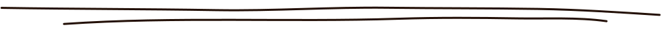

PROJETS
Cat Coins du Monde
Godot + Procreate
Game Jam qui a eu lieu du 3/02 au 7/02 durant lequel on devait créer un jeu jouable sur le thème de "l'Adaptabilité".
Cat Coins du Monde a gagné le vote du public et du jury de My Digital Jam 2025.
ACCEDERSeeYouSun
Vue.js + Strapi
Projet au cours de mon stage à SeeYouSun, où j’ai utilisé un headless CMS ainsi qu’un framework JS (Vue.js) pour comprendre tous les outils et systèmes en place pour refaire un site internet.
CONSULTERCHATS SANS TOIT FOUGERAIS
Wordpress
Projet "My Creative Week" où on devait refaire la DA d'une association ainsi que leur site internet.
On a travaillé en groupe de 3 pour aider cette association de protection féline, je me suis occupée du webdesign, du logo, ainsi que du développement.
ACCEDERQUIZZ GENSHIN
HTML + CSS + JS
Petit projet perso d’un “test de personnalité” Genshin pour savoir quel élément tu es. Les questions réponses ne sont pas faites pour correspondre à 100% à l’histoire du jeu.
ACCEDER